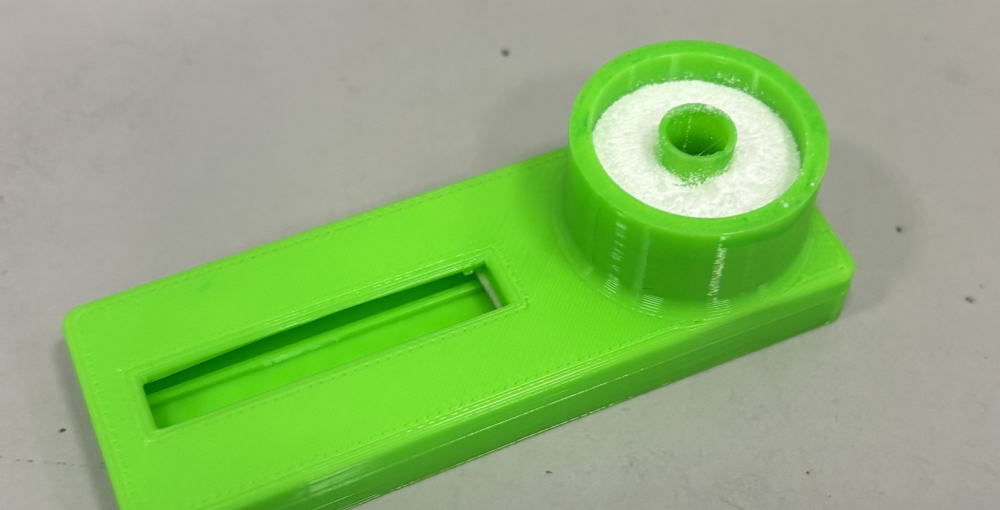
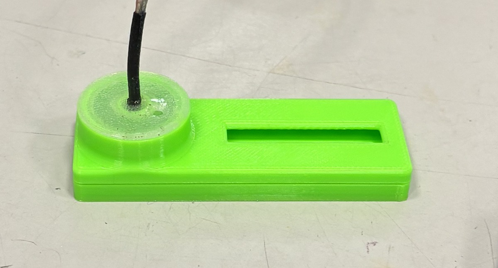
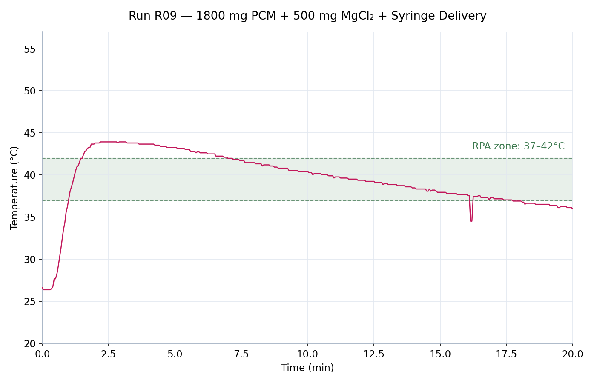
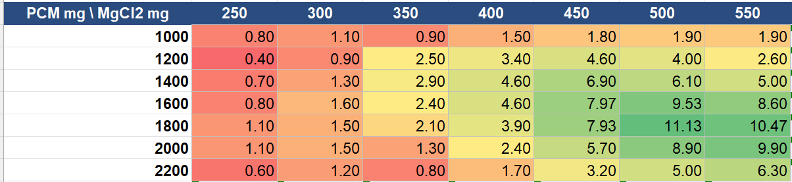
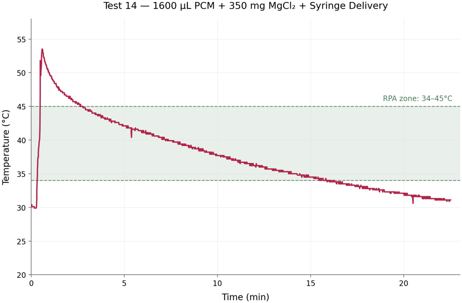
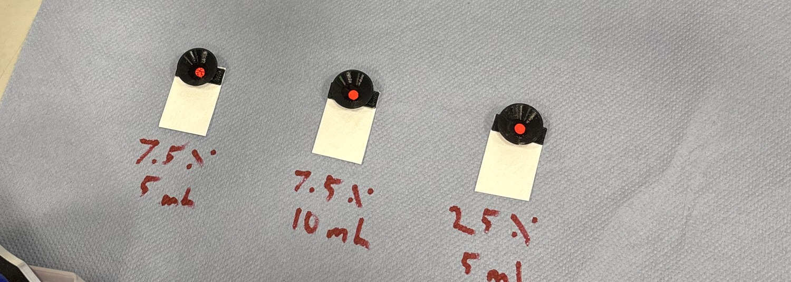
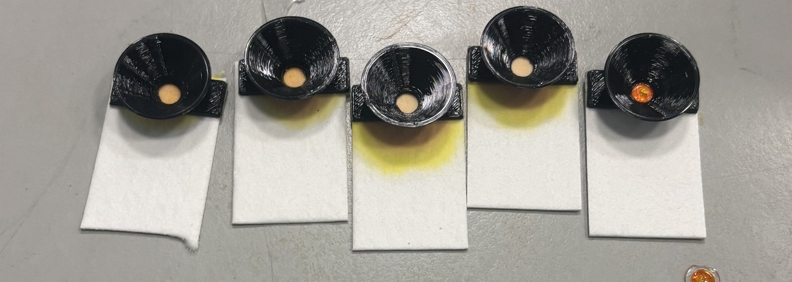

← Research / Project 01
Passive Thermal Control for an Infrastructure-Free Diagnostic Cassette
Holding a DNA amplification reaction at temperature for twenty minutes normally takes a heater, a controller, and a power source — exactly the equipment a point-of-care test exists to eliminate. This one runs on a salt.
- Principal Investigator
- Prof. Firat Güder
- Institution
- Imperial College London
- Department
- Bioengineering
- Group
- Güder Research Group
- Affiliation
- Jun–Aug 2026 · 3 months
Design targets
- Requirement
- 37–42 °C held for 20 min
- Power budget
- Zero external power
- Operator input
- One water activation step
- Cost target
- Single-use disposable
Research focus
Isothermal DNA amplification is far more sensitive than a lateral flow assay on its own, but it requires holding a reaction at elevated temperature for roughly twenty minutes. In practice that means a heater, a controller, and a power source — the same laboratory infrastructure that a point-of-care test is meant to remove. The research question was whether a controlled thermal profile and a timed fluid transfer could both be produced from stored chemical energy and material properties alone, inside a disposable that a non-technical user activates with water.
The group's wider programme builds intelligent interfaces between chemical and biological systems and low-cost electronics, with a strong emphasis on manufacturable diagnostics for settings without reliable laboratory access. This project sat on the fully passive end of that spectrum: no electronics at all, with every function that would normally be handled by a circuit reassigned to a material.
My responsibilities
I owned the thermal and timing subsystems end to end. I designed the cassette geometry in Fusion 360 and iterated the printed body through several revisions of the annular heating chamber, sizing the wall thickness and chamber volume against the reaction volume it had to heat. I built the characterization rig, sealing a thermocouple into the sample well so that runs reported reaction-volume temperature rather than the much friendlier chamber-wall temperature. I then designed and executed the parameter sweep — 49 combinations of phase-change material and magnesium chloride mass — logging every run and writing the Python and Matplotlib pipeline that reduced the raw traces to minutes-in-window.
Separately I developed the passive timing valve: casting PVA membranes across a range of concentrations, cast volumes, and plasticizer additions, then screening them with a tracer dye on real lateral flow sample pads so that each run reported both when the membrane opened and how cleanly it failed. At the end of the placement I ran a limited end-to-end trial through the assembled cassette and confirmed product by gel electrophoresis.
Architecture
A two-stage passive system.
An annular heating chamber wraps concentrically around the central sample chamber, maximizing heated wall area in contact with the reaction volume and keeping the thermal path short and radially symmetric. The sample chamber sits directly upstream of the lateral flow strip, separated from it by a sacrificial membrane that governs when amplified product is released.
- Exothermic charge. Water activation triggers an MgCl2 hydration exotherm — high energy density and fast release, but an uncontrolled spike on its own.
- PCM buffer. A phase-change ring absorbs the exotherm peak as latent heat, then returns it slowly on crystallization, converting a spike into a usable plateau.
- Sacrificial valve. A PVA membrane swells and ruptures on a fixed timescale, releasing product to the strip only after amplification completes.



- Design
- Fusion 360
- Fabrication
- FDM printing, membrane casting
- Instrumentation
- Thermocouple logging
- Analysis
- Python, Matplotlib
Thermal characterization
Two parameters that refuse to tune independently.
The PCM and the salt trade against each other. More MgCl2 raises peak temperature and shortens the useful window; more PCM flattens the peak but can absorb so much energy that the volume never reaches temperature at all. Neither can be tuned on its own, so I swept both across 49 combinations, logging a thermocouple sealed in the sample well on every run.
Result: the best configuration held the reaction volume inside the 37–42 °C window for roughly 11 minutes with no electrical input, and delivered product to the strip on a timescale set entirely by membrane geometry.



Passive timing valve
Timing as a material property.
Product must not reach the strip early, because flow before amplification completes destroys the sensitivity gain the heater exists to produce. With no power available, timing had to become a material property, so I used a PVA membrane sized to swell and rupture at the end of the window.
Casting condition sets both the rupture time and how cleanly the membrane fails, so I screened PVA concentration (w/v), cast volume, and plasticizer additions by running a tracer dye on real lateral flow sample pads. Each run therefore reported two things: when the membrane opened, and how.


Assay validation
Proof of function, not a performance number.
With both subsystems characterized, I ran a limited end-to-end trial amplifying the mecA resistance gene from MRSA inside the cassette, confirming product by gel electrophoresis. The summer ended before I could repeat it at the replicate count a sensitivity claim would need, so it stands as proof of function rather than a performance number.
The honest limitations are the ones worth naming. The thermal optimum sits on a narrow ridge, which means manufacturing tolerance on charge mass matters more than it should; the valve shows build-to-build timing scatter that a tighter casting process would need to close; and 11 minutes in window is short of the 20 the protocol nominally wants. Each of those is a next experiment rather than a dead end.
Contact
Questions about this project?
- noah.haeske@ufl.edu
- Phone
- 407-705-9895